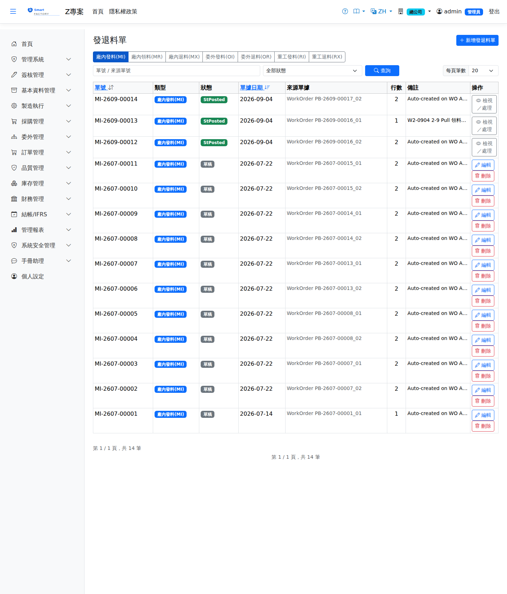

發退料單Material Slips
依工單 BOM 需求產生發料單，倉庫據以揀料發料；多餘物料以退料單退回。發料過帳扣庫存並累計工單材料成本（依發料時點成本）。Issue slips are created from the work order's BOM requirement and the warehouse picks and issues against them; surplus material goes back on a return slip. Posting an issue deducts stock and accumulates the work order's material cost (at the cost prevailing when it was issued).

查詢Search
備料、發料、領料、後沖、退料的關係How staging, issue, requisition, backflush and return fit together
工單投產（MRP 展開／工單核准）時，系統先為每項用料做軟鎖定：只鎖廠級數量，不指定儲位。之後料件以三種方式被工單用掉，用剩的再退回：When a work order is released (MRP explosion / work-order approval) the system places a soft reservation on each material: a plant-level quantity, with no specific location. The material is then consumed by the work order in one of three ways, and anything left over is returned:
| 作業Operation | 說明Guide |
|---|---|
| 備料（選做）Staging (optional) | 在「備料單」確認時把軟鎖定轉給備料單，再把料實際移入備料倉。鎖定一直保留到發料過帳；之後的發料／領料要先從備料儲位扣。不做備料就維持軟鎖定。Confirming a staging order transfers the soft reservation to it, then the material is physically moved into the staging area. The reservation stays until the issue is posted. Without staging the soft reservation simply remains. |
| 發料 MI（Push）Issue MI (Push) | 工單核准時系統自動產生草稿；倉庫指定來源儲位後過帳出庫。Created automatically as a draft when the work order is approved; the warehouse gives the source location and posts it. |
| 領料 MR（Pull）Requisition MR (Pull) | 生產單位按需申請 → 送審 → 倉庫核准 → 揀料過帳。手機可在上工頁直接申請。Raised by production as needed → submitted → approved by the warehouse → picked and posted. It can be requested straight from the production-session screen on the phone. |
| 後沖（Backflush）Backflush | 不開單；工單完工時依完工量自動扣料，結案時釋放剩餘鎖定。No slip; material is deducted automatically from the completed quantity when the work order is completed, and remaining reservations are released at closure. |
| 退料 MXReturn MX | 用剩的料退回指定儲位，退料量不得超過已發未退；以當初發料成本入庫，不再鎖給該工單。Surplus goes back into a chosen location; it cannot exceed what was issued and not yet returned. It comes back at the original issue cost and is no longer reserved for the work order. |
單據狀態Status
| 狀態Status | 說明Guide |
|---|---|
| 草稿Draft | 可編輯、刪除。領料單（MR）在此送審；其他類別直接「核准」。Can be edited or deleted. Requisitions (MR) are submitted from here; every other type is simply "Approved". |
| 待核准Pending | 僅領料單（MR）：等倉庫核准。Requisitions (MR) only: waiting for warehouse approval. |
| 已核准Approved | 可開始揀料。Ready to pick. |
| 揀料中Picking | 倉庫正在揀料。The warehouse is picking. |
| 已確認Confirmed | 揀料完成，等待過帳。Picking finished; waiting to be posted. |
| 已過帳Posted | 庫存已異動，工單已發／已退量已累計，不可再修改。Stock has moved and the work order's issued/returned totals are updated; it can no longer be changed. |
| 已取消Cancelled | 過帳前都可取消，包括倉庫已確認揀料的單（揀出的料請放回原儲位，尚未過帳故庫存帳不受影響）；已過帳或已結案的單不能取消。工單作廢時，草稿到揀料中的單會自動取消。來源工單已作廢時發退料單都不能過帳；已結案（入庫完成）的工單只能退料、不能再發料。Can be cancelled at any point before posting, including a slip the warehouse has already confirmed as picked (put the picked material back in its original location; nothing has been posted, so stock records are unaffected). Posted or closed slips cannot be cancelled. When the work order is voided, slips from draft up to picking are cancelled automatically. No slip can be posted against a voided work order, and a closed (received) work order accepts returns only — no further issues. |
作業流程Process
發料（含領料、委外發料）Issue (incl. requisition and outsource issue)
退料Return
列印Printing
清單每列的 按鈕（需有列印權限）在新分頁開啟含 QR Code 的列印單，可直接列印或另存 PDF。列印單含類別、來源單據、委外廠商名稱，以及各行品號、品名、申請／核准／實發量、單位與出入庫倉儲位，供倉庫備料與簽收。The button on each row of the list (print permission required) opens a printout with a QR code in a new tab, ready to print or save as PDF. The printout shows the category, source document and subcontractor name, and for each line the product code and name, requested/approved/confirmed quantities, unit and from/to warehouse and location, for picking and sign-off.
欄位說明Field reference
表頭Header
| 欄位Field | 說明Guide |
|---|---|
| 發退料單號Slip No | 系統採番，前綴依類別而不同（MI／MR／MX／OI／OR／RI／RX）Numbered by the system, with a prefix that depends on the type (MI / MR / MX / OI / OR / RI / RX) |
| 類別Category | 必填Required 七種業務路徑：MI 廠內發料（工單釋出後系統自動建立；重工工單自動建立的是 RI）／MR 廠內領料（生產單位按需申請，需審核）／MX 廠內退料／OI 委外發料／OR 委外退料／RI 重工發料／RX 重工退料。工單的發退料一律不入帳（料只是進出在製品），由完工入庫結算；沒有開工單的重工改用庫存模組的重工發退料單Seven business paths: MI in-plant issue (created automatically once the work order is released; for a rework order the automatic slip is RI) / MR in-plant requisition (raised by production as needed, requires approval) / MX in-plant return / OI outsource issue / OR outsource return / RI rework issue / RX rework return. Work order material slips never create journal entries (the material just moves in and out of work in process) and are settled at completion receipt; rework without a work order uses the INV Rework Material document instead |
| 單據日期Doc Date | 必填Required 發料或退料的日期Date of the issue or return |
| 目標廠商Target supplier | 委外類別（OI／OR）時填寫收料的委外廠商For outsource types (OI / OR), the subcontractor receiving the material |
| 來源單別 / 來源單號Source doc type / Source doc No | 產生此需求的來源單據，可回溯需求出處。來源單別從下拉選（工單；委外類別另可選委外採購單），來源單號可輸入關鍵字搜尋，只列還會發退料的單：發料類列已釋出、生產中的工單，退料類另含已完工；已入庫結案、作廢的不列。委外採購單只列已確認的。Source document that produced this demand, for tracing where it came from. Pick the source doc type from the list (work order; outsource categories can also use an outsource purchase order) and search the source doc No by keyword. Only documents that can still issue or return material are listed: issue categories show released and in-progress work orders, return categories also include completed ones; closed (received into stock) and void ones are not listed. Outsource purchase orders are listed only once confirmed. |
| 備註Notes | 整張單據的補充說明Notes for the whole document |
明細Lines
| 欄位Field | 說明Guide |
|---|---|
| 品號Item | 必填Required 要發出或退回的料件Item to be issued or returned |
| 申請量 / 單位Requested qty / Unit | 必填Required 需求數量與計量單位。單位固定為品號的庫存單位，選了品號後自動帶出——工單用料、領退料額度與過帳都以庫存單位計，存檔時其他單位會被擋下。Demand quantity and unit of measure. The unit is always the product's stock unit, filled in once the product is chosen — work-order materials, issue/return limits and posting all use the stock unit, and any other unit is rejected on save. |
| 來源倉 / 儲位Source warehouse / Location | 發料類才有。料件取出的位置；先選倉庫再選儲位，或點「選擇庫存」從有庫存的儲位挑。若該品號另有保留給訂單／工單的量，視窗上方會以黃色提示列出（這些量不落在儲位上，表格的「可用」沒有扣除；出貨時超過「在手 − 保留」會被擋）。Issue types only. Where the material is taken from: choose the warehouse then the location, or use "Pick from stock" to choose from locations that hold stock. If some of the item is also reserved for orders or work orders, a yellow notice at the top of the window lists it (those reservations are not tied to a location, so "Available" in the table does not deduct them; shipping more than on-hand minus reserved is blocked). |
| 退回倉 / 儲位Return to warehouse / Location | 退料類才有。退回的料要放進的位置Return types only. Where the returned material is put |
| 批號Lot | 批號管制品的批次；影響追溯與效期管控Lot for lot-controlled items; it drives traceability and shelf-life control |
狀態流程：草稿 → 待核准（僅領料 MR）→ 已核准 → 揀料中 → 已確認 → 已過帳。Status flow: draft → pending (requisitions MR only) → approved → picking → confirmed → posted.
相關畫面Related screens
備料進度追蹤Material Slip Progress、倉庫作業Warehouse Operations、手機：工單發退料Mobile: WO Material Issue/Return、手機：領料／退料Mobile: Requisition / Return